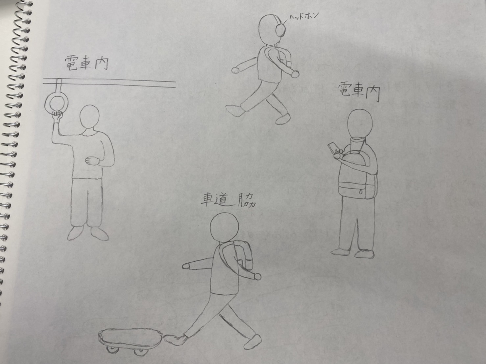

デジタルファブリケーション 第３回
観察課題

10月30日 1人目
品川から川崎間の電車内で、片手でつり革につかまり、胸の下あたりをさすっている人がいた。
何か緊張しているのか、無意識に起きた動作なのか分からないが、普段目にしない動きで目に止まった。
10月30日 2人目
川崎から横浜間の電車内で、某有名なカフェの蓋つきカップを前に背負っているリュックと顎で支えて、両手でスマートフォンを扱っている人を見かけた。
とても器用だと感心した。
しかし、なぜ、そのような行為に至ったのか気になった。
(補足)リュックに入っている荷物が多すぎて、カップを入れるスペースが無かったのに加え、早急に返信をしなければならない連絡があったのかと考えた。
11月4日 3人目
学校帰りの道でスケートボードを蹴とばしながら、歩いている人を見つけた。
蹴とばしている音がうるさくて視界に入ってきた。
乗って使用した方が移動も速くなって楽だし、どちらにせよ、持ち運んだ方が周りに迷惑がかからないのに、なぜ、蹴とばしていたのか気になった。
(補足)スケートボードに乗ったらいけない通りで、持つのが面倒だったのかもしれないと推測。
11月10日 4人目
ふと、ヘッドホンやイヤホンをして歩いている人が気になった。
自分はやらないのと、事故に繋がる危険性もあるので、やめた方がいいと感じたからだ。
結果・感想
周りを見渡すと、あまり変わった人はいないように感じた。
このことから、日本人は周りに合わせた動きを自然と行い、協調性を保っているように感じた。
また、変わった行動をしている人に嫌悪的・批判的な目を向ける傾向があるようにも感じた。
実際にコロナ禍で、咳やくしゃみをしている人が車内にいたり、マスクをしてない人を見つけたり、飲食をしていた李、大声で話していた李する人に対する視線が鋭いような目でみているからだ。